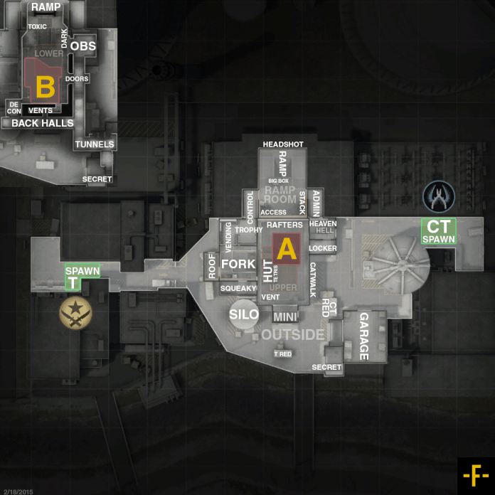

Cette carte à été créée par un mappeur Allemand du nom de Jo "MEEEEDIC" Bieg. Elle sortira officiellement en 1999 lorsque le premier jeu Counter Strike n'était qu'en BETA 4.0
La version originale de cette map est inspirée par le niveau "Tension en surface" du jeu Half-Life. En effet MEEEEDIC était très fan du jeu et s'était notamment mit au mappage sur celui-ci.
Cette carte a longtemps été critiquée, et l'est toujours, dû au fait que celle-ci à avant tout été créée en tant qu'une carte pour le mode otage. Ce qui fait que la map est très orienté vers la défense (trop même).
Malgrè ce défaut important la carte sera beaucoup joué (énormément) et sera présente depuis le début de la franchise Counter Strike après que Valve rachète les droits pour pouvoir l'intégrer. Evidemment, les graphismes et autres décors de la carte changerons au fil des années mais la manière dont la carte est construite restera quasi identique.
Comme dit plus tôt, cette carte était fortement critiquée ! Certains joueurs la détestent d'autres l'aiment. C'est notamment le cas de l'équipe pro NiP :
"De manière générale, je pense que Nuke est une carte très sous-estimée. C'est une map très intéressante en raison de sa construction, elle est très différente des autres cartes et unique. Mais le truc, c'est que les équipes sont soit très fortes dessus, soit très moyennes voire mauvaises. Et celles dans la deuxième catégorie représentent 70 à 80 % du total... Et celles qui sont très fortes dessus vont voir la map être bannie à chaque fois car elles sont sûres de gagner à 100 % si elles la jouent." NBK
Pour terminer, voici une image répértoriant les noms des différents endroits de la carte :
Sources : sources map ; les maps avec les callouts ont étées faites par un utilisateur du nom de Froosh.